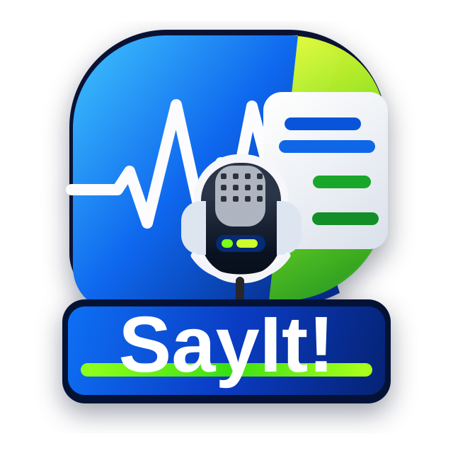

Tap the mic, say it naturally, and let SayIt catch the raw message before it slips away.

Communication translator + teleprompter
Say what you mean so it lands.
Tap the microphone and tell me what's going on.
Give a little context and get support turning it into clear words.
Shape the message so a spouse, child, client, or coworker can actually hear what you mean.
Use the rewritten message with auto-scroll, pace control, pause, resume, and line focus.
Intake
Build the communication context
Output
Message translation
Intent waiting for input
Waiting for translation
Conversation map
- Generate a translation to map the conversation shape.
Tone translation
- Choose up to three tones to see how the rewrite is being steered.
Short version
Your condensed version will appear here.
Delivery notes
- Choose a tone and outcome to shape the coaching notes.
Teleprompter
Practice it out loud
Generate a translated message to load teleprompter mode.